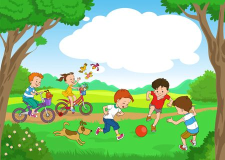

Healthy Habits For Kids
Parents can help their children develop healthy habits early in life that will bring lifelong benefits. “Children look up to their parents, so parents can set a good example,” says Kimberly Leek, MD, a pediatrician at Scripps Clinic, Santee.
Try these seven tips to get you and your family started.
Try these seven tips to get you and your family started.
1. Keep it positive
“Helping your children develop a positive attitude can greatly contribute to their well-being throughout their lives and help them build resilience,” says Dr. Leek. “Tell kids what they can do, not what they can’t and celebrate successes.”
2. Make meals a colorful collage
Filling a plate with brightly colored foods translates into health benefits and nutritional value, especially when the items are in season. Think red (apples), blue and purple (eggplant and grapes), green (beans), yellow and orange (carrots and squash), and white (cauliflower).

3. Limit screen time
Children and teens are growing up immersed in the digital world, exposed to digital media at all hours of the day, including computers, smartphones and television. Parents play an important role in teaching their children how to use screen time in a healthy way that can enhance daily life.
“Make your own family media use plan, set limits and encourage play,” says Dr. Leek. “Overuse of media can lead to a sedentary lifestyle and displace important social interactions, exercise and even sleep.”
4. Enjoy physical activities
Expose your kids to a range of physical activities, from swimming to hiking, and enjoy them together as a family. Every child is different, so there is bound to be something they will enjoy.
